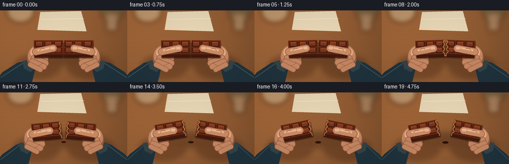
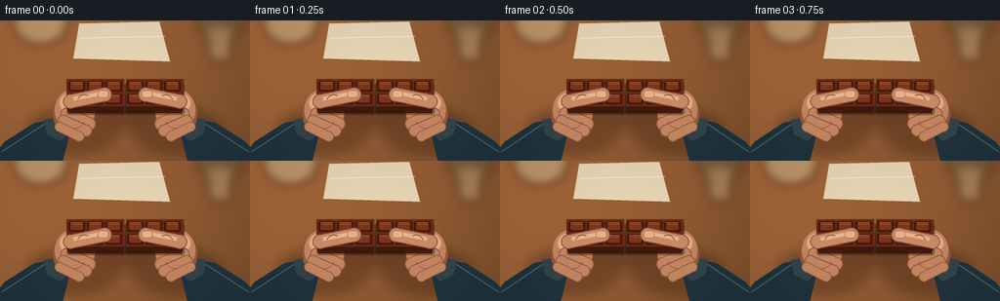
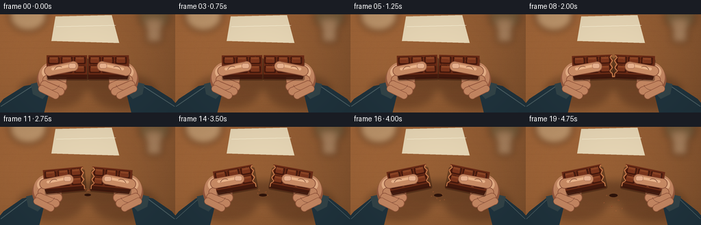

CODING AGENTS AS PIXEL WORLD MODELS
traex/GPT-5.6-Sol · motion_rationality_0010
点击播放 · 原生 RGB 像素
逐轮保存的候选
回放视频、检查图与代码变化。
每份候选均可单独播放。实际图片检查记录在下方工具轨迹中。
候选 01播放与检查图
点击播放 · 原生 RGB 像素


展开代码变化
--- 上一保存版本
+++ 本次保存版本
@@ -0,0 +1,249 @@
+from pathlib import Path
+import math
+import numpy as np
+from PIL import Image, ImageDraw, ImageFilter
+import artifact_io
+
+# Deterministic, supersampled vector animation.
+W, H, N, SS = 256, 144, 20, 4
+RW, RH = W * SS, H * SS
+ROOT = Path(__file__).resolve().parent
+rng = np.random.default_rng(1042)
+
+def q(v):
+ return int(round(v * SS))
+
+def pts(seq):
+ return [(q(x), q(y)) for x, y in seq]
+
+def smooth(x):
+ x = max(0.0, min(1.0, x))
+ return x*x*(3.0-2.0*x)
+
+def capsule(draw, a, b, width, fill, outline=None, outline_w=0):
+ a = (q(a[0]), q(a[1])); b = (q(b[0]), q(b[1])); w = q(width)
+ if outline and outline_w:
+ wo = w + 2*q(outline_w)
+ draw.line([a,b], fill=outline, width=wo)
+ r=wo//2
+ for p in (a,b): draw.ellipse((p[0]-r,p[1]-r,p[0]+r,p[1]+r), fill=outline)
+ draw.line([a,b], fill=fill, width=w)
+ r=w//2
+ for p in (a,b): draw.ellipse((p[0]-r,p[1]-r,p[0]+r,p[1]+r), fill=fill)
+
+def background():
+ yy, xx = np.mgrid[0:RH, 0:RW]
+ # Honey-colored wooden worktop with a broad window-light gradient.
+ y = yy / SS
+ x = xx / SS
+ light = 1.0 - 0.17*(x/W) - 0.08*(y/H)
+ base = np.empty((RH,RW,3),dtype=np.float32)
+ base[:,:,0] = 171*light
+ base[:,:,1] = 108*light
+ base[:,:,2] = 60*light
+ # Fine stable material grain, not frame noise.
+ noise = rng.normal(0,1.8,(RH,RW))
+ base += noise[:,:,None]
+ base = np.clip(base,0,255).astype(np.uint8)
+ im=Image.fromarray(base,'RGB')
+ d=ImageDraw.Draw(im,'RGBA')
+ # Long irregular wood grain.
+ for k in range(25):
+ y0 = rng.uniform(4,141)
+ amp = rng.uniform(.15,1.2)
+ col=(83,43,24,int(rng.uniform(12,29)))
+ path=[]
+ for x0 in range(-5,265,8):
+ path.append((q(x0),q(y0+amp*math.sin(x0/rng.uniform(12,32)+k))))
+ d.line(path, fill=col, width=max(1,q(rng.uniform(.18,.5))))
+ # Soft out-of-focus objects at the top edge suggest a kitchen setting.
+ blur=Image.new('RGBA',(RW,RH),(0,0,0,0)); bd=ImageDraw.Draw(blur,'RGBA')
+ bd.ellipse((q(13),q(-20),q(69),q(25)),fill=(233,220,183,105))
+ bd.ellipse((q(202),q(-15),q(249),q(22)),fill=(65,91,72,80))
+ bd.rounded_rectangle((q(213),q(7),q(237),q(42)),radius=q(5),fill=(225,215,190,78))
+ blur=blur.filter(ImageFilter.GaussianBlur(q(5)))
+ im=Image.alpha_composite(im.convert('RGBA'),blur)
+ # A folded cream napkin, far behind the action.
+ d=ImageDraw.Draw(im,'RGBA')
+ d.polygon(pts([(81,3),(163,1),(174,42),(75,39)]),fill=(231,214,181,46))
+ d.line(pts([(82,18),(169,16)]),fill=(255,248,221,35),width=q(.7))
+ return im
+
+BASE=background()
+
+# Chocolate pieces are rendered locally and rotated as rigid bodies.
+def make_half(side, broken):
+ sw,sh=70,48
+ im=Image.new('RGBA',(q(sw),q(sh)),(0,0,0,0)); d=ImageDraw.Draw(im,'RGBA')
+ # coordinates use local pixels, top surface y=6..34 and front thickness to y=41.
+ if side=='L':
+ edge = [(64,6),(61,10),(65,15),(61,20),(64,25),(60,30),(64,34)] if broken else [(64,6),(64,34)]
+ top=[(5,6)] + edge[:1] + edge[1:] + [(5,34)]
+ # ordering around polygon: TL -> TR and down jagged edge -> BL
+ top=[(5,6)] + edge + [(5,34)]
+ front=[(5,34)] + list(reversed(edge[-2:])) + [(64,41),(7,41)] if broken else [(5,34),(64,34),(64,41),(7,41)]
+ else:
+ edge = [(6,6),(9,10),(5,15),(9,20),(6,25),(10,30),(6,34)] if broken else [(6,6),(6,34)]
+ top=edge + [(65,6),(65,34)]
+ # Correct winding from jagged TL down to BL, then BR, TR.
+ top=edge + [(65,34),(65,6)]
+ front=[edge[-1],(65,34),(63,41),(6,41)]
+ # Grounded shadow under thickness.
+ d.rounded_rectangle((q(5),q(10),q(66),q(43)),radius=q(3),fill=(34,13,7,90))
+ d.polygon(pts(front),fill=(66,25,13,255))
+ d.line(pts([(7,39),(62,39)]),fill=(39,13,7,210),width=q(1))
+ d.polygon(pts(top),fill=(105,43,22,255))
+ # Molded 3x2 squares, with bevels and highlights.
+ xstarts=[7,26,45]
+ for row,(ya,yb) in enumerate([(8,19),(21,32)]):
+ for j,xa in enumerate(xstarts):
+ xb=xa+17
+ # Trim blocks nearest a newly broken, irregular edge.
+ if side=='L' and j==2 and broken: xb=61
+ if side=='R' and j==0 and broken: xa=9
+ d.rounded_rectangle((q(xa),q(ya),q(xb),q(yb)),radius=q(2.0),fill=(69,25,13,255))
+ d.polygon(pts([(xa+2,ya+1),(xb-2,ya+1),(xb-4,ya+3),(xa+3,ya+3)]),fill=(156,79,43,245))
+ d.rounded_rectangle((q(xa+2),q(ya+2),q(xb-2),q(yb-2)),radius=q(1.4),fill=(122,53,28,255))
+ d.line(pts([(xa+3,ya+3),(xb-3,ya+3)]),fill=(186,102,58,175),width=q(.55))
+ d.line(pts([(xb-2,ya+3),(xb-2,yb-3)]),fill=(51,18,10,170),width=q(.7))
+ # Tiny cocoa bloom gives texture.
+ for k in range(18):
+ x0=float(rng.uniform(9,61)); y0=float(rng.uniform(8,32))
+ d.ellipse((q(x0),q(y0),q(x0+.35),q(y0+.35)),fill=(220,142,91,55))
+ if broken:
+ # Lighter, crumbly interior on the fracture face.
+ if side=='L':
+ ep=[(63,7),(60.5,10),(64,15),(60.5,20),(63.5,25),(59.5,30),(63,34),(63,39)]
+ else:
+ ep=[(7,7),(10,10),(6,15),(10,20),(7,25),(11,30),(7,34),(7,39)]
+ d.line(pts(ep),fill=(184,107,65,255),width=q(1.4))
+ d.line(pts(ep),fill=(226,153,98,180),width=q(.45))
+ return im
+
+def paste_center(canvas,obj,cx,cy,deg):
+ rot=obj.rotate(deg,resample=Image.Resampling.BICUBIC,expand=True)
+ canvas.alpha_composite(rot,(int(q(cx)-rot.width/2),int(q(cy)-rot.height/2)))
+
+def draw_shadow(im, left_c, right_c, gap, rot):
+ lay=Image.new('RGBA',(RW,RH),(0,0,0,0)); d=ImageDraw.Draw(lay,'RGBA')
+ # Broad hand and bar shadows all share the same upper-left light source.
+ d.ellipse((q(28-gap*.22),q(89),q(122-gap*.18),q(137)),fill=(46,20,10,75))
+ d.ellipse((q(134+gap*.18),q(89),q(228+gap*.22),q(137)),fill=(46,20,10,75))
+ d.rounded_rectangle((q(63-gap*.5),q(80),q(193+gap*.5),q(111)),radius=q(10),fill=(33,13,7,82))
+ lay=lay.filter(ImageFilter.GaussianBlur(q(5.2)))
+ im.alpha_composite(lay)
+
+def hand_under(im, side, shift, squeeze):
+ d=ImageDraw.Draw(im,'RGBA')
+ skin=(197,135,98,255); skin_dark=(150,88,61,255); hi=(229,174,133,190)
+ if side=='L':
+ # Soft knitted sleeve and cuff enter from below-left.
+ d.polygon(pts([(-12,145),(5,124),(34+shift*.4,105),(55+shift,101),(68+shift,117),(61+shift,145)]),fill=(32,52,62,255))
+ d.line(pts([(1,135),(46+shift,104)]),fill=(74,94,99,150),width=q(1.2))
+ d.polygon(pts([(42+shift,102),(59+shift,98),(69+shift,113),(59+shift,124),(45+shift,117)]),fill=(51,68,72,255))
+ # Palm.
+ d.ellipse((q(51+shift),q(73),q(94+shift),q(119)),fill=skin_dark)
+ d.ellipse((q(53+shift),q(70),q(94+shift),q(114)),fill=skin)
+ d.ellipse((q(58+shift),q(74),q(84+shift),q(95)),fill=hi)
+ # Curled fingers supporting the underside.
+ capsule(d,(66+shift,96),(88+shift,106-squeeze),12,skin,skin_dark,1)
+ capsule(d,(62+shift,103),(85+shift,113-squeeze*.5),10.5,skin,skin_dark,1)
+ capsule(d,(58+shift,109),(78+shift,119),9,skin,skin_dark,.8)
+ # Creases.
+ d.arc((q(60+shift),q(91),q(84+shift),q(111)),15,85,fill=(119,70,52,120),width=q(.6))
+ else:
+ d.polygon(pts([(268,145),(251,124),(222-shift*.4,105),(201-shift,101),(188-shift,117),(195-shift,145)]),fill=(32,52,62,255))
+ d.line(pts([(255,135),(210-shift,104)]),fill=(74,94,99,150),width=q(1.2))
+ d.polygon(pts([(214-shift,102),(197-shift,98),(187-shift,113),(197-shift,124),(211-shift,117)]),fill=(51,68,72,255))
+ d.ellipse((q(162-shift),q(73),q(205-shift),q(119)),fill=skin_dark)
+ d.ellipse((q(162-shift),q(70),q(203-shift),q(114)),fill=skin)
+ d.ellipse((q(172-shift),q(74),q(198-shift),q(95)),fill=hi)
+ capsule(d,(190-shift,96),(168-shift,106-squeeze),12,skin,skin_dark,1)
+ capsule(d,(194-shift,103),(171-shift,113-squeeze*.5),10.5,skin,skin_dark,1)
+ capsule(d,(198-shift,109),(178-shift,119),9,skin,skin_dark,.8)
+ d.arc((q(172-shift),q(91),q(196-shift),q(111)),95,165,fill=(119,70,52,120),width=q(.6))
+
+def thumb_over(im, side, shift, drop, tense):
+ d=ImageDraw.Draw(im,'RGBA')
+ skin=(202,140,101,255); edge=(143,83,59,255); high=(235,181,140,160)
+ if side=='L':
+ a=(69+shift,83+drop); b=(104+shift,76+drop+tense*.4)
+ capsule(d,a,b,13.2,skin,edge,1)
+ capsule(d,(74+shift,80+drop),(99+shift,75+drop),4.0,high)
+ # Thumbnail and knuckle crease.
+ d.rounded_rectangle((q(97+shift),q(71.7+drop),q(108+shift),q(79.2+drop)),radius=q(3.1),fill=(231,177,142,220),outline=(158,101,79,135),width=q(.45))
+ d.arc((q(76+shift),q(76+drop),q(91+shift),q(90+drop)),195,300,fill=(124,72,52,130),width=q(.65))
+ else:
+ a=(187-shift,83+drop); b=(152-shift,76+drop+tense*.4)
+ capsule(d,a,b,13.2,skin,edge,1)
+ capsule(d,(182-shift,80+drop),(157-shift,75+drop),4.0,high)
+ d.rounded_rectangle((q(148-shift),q(71.7+drop),q(159-shift),q(79.2+drop)),radius=q(3.1),fill=(231,177,142,220),outline=(158,101,79,135),width=q(.45))
+ d.arc((q(165-shift),q(76+drop),q(180-shift),q(90+drop)),240,345,fill=(124,72,52,130),width=q(.65))
+
+def crumb_layer(im, tau):
+ if tau <= 0: return
+ d=ImageDraw.Draw(im,'RGBA')
+ particles=[(-8,-4,1.7,0.9),(6,-1,2.2,1.2),(-2,3,2.8,1.0),(10,3,3.2,.75),(-11,1,2.4,.65),(3,0,4.0,.55)]
+ for k,(vx,vy,grav,sz) in enumerate(particles):
+ # First burst disperses sideways; gravity then pulls every crumb down.
+ x=128 + vx*tau*1.25
+ y=91 + vy*tau + grav*8*tau*tau
+ ang=(k*37+tau*120)*math.pi/180
+ r=sz*(1+.1*math.sin(tau*5+k))
+ poly=[]
+ for j in range(5):
+ a=ang+j*2*math.pi/5
+ rr=r*(1 if j%2 else .7)
+ poly.append((x+rr*math.cos(a),y+rr*math.sin(a)))
+ d.polygon(pts(poly),fill=(100,42,22,255))
+ d.line(pts(poly+[poly[0]]),fill=(203,123,71,175),width=q(.35))
+
+frames=[]
+for i in range(N):
+ t=i/(N-1)
+ pre=smooth((t-.08)/.30)
+ snapped=t>=.42
+ post=smooth((t-.42)/.42) if snapped else 0.0
+ # Inward pressure first, then a decisive outward pull.
+ settle=3.0*(1-smooth(t/.18))
+ gap=25.0*post
+ angle=2.2*pre + 9.5*post
+ squeeze=2.2*pre
+ # Brief recoil downward at the instant of the snap.
+ recoil=2.0*math.sin(min(1,max(0,(t-.42)/.18))*math.pi) if snapped else 0
+ im=BASE.copy()
+ draw_shadow(im,98-gap/2,158+gap/2,gap,angle)
+ hand_under(im,'L',-gap/2+settle,squeeze)
+ hand_under(im,'R',-gap/2+settle,squeeze)
+ # Bar pieces: two rigid halves meet exactly until the fracture.
+ left=make_half('L',snapped); right=make_half('R',snapped)
+ paste_center(im,left,98-gap/2,78+recoil,angle)
+ paste_center(im,right,158+gap/2,78+recoil,-angle)
+ # Stress fracture appears one frame before full separation.
+ if 0.34 <= t < .42:
+ d=ImageDraw.Draw(im,'RGBA')
+ crack=[(128,65),(126.8,70),(129,75),(127,80),(129.5,86),(128,93)]
+ d.line(pts(crack),fill=(42,13,7,230),width=q(1.05))
+ d.line(pts(crack[:3]),fill=(204,124,74,130),width=q(.35))
+ # The thumbs press on top and travel with their respective halves.
+ thumb_over(im,'L',-gap/2+settle,recoil,pre)
+ thumb_over(im,'R',-gap/2+settle,recoil,pre)
+ tau=max(0,(t-.42)/.58)
+ crumb_layer(im,tau)
+ # Fine moving contact shadows at the broken edges.
+ if snapped:
+ d=ImageDraw.Draw(im,'RGBA')
+ if gap>3:
+ d.ellipse((q(124-gap*.08),q(98),q(132+gap*.08),q(101+2*tau)),fill=(45,19,10,int(45*(1-tau*.5))))
+ # Very subtle vignette maintains focus on the action.
+ arr=np.asarray(im.convert('RGB')).astype(np.float32)
+ yy,xx=np.mgrid[0:RH,0:RW]
+ dx=(xx-RW/2)/(RW/2); dy=(yy-RH*.52)/(RH*.70)
+ vig=np.clip(1-.075*(dx*dx+dy*dy),.86,1)[:,:,None]
+ arr=np.clip(arr*vig,0,255).astype(np.uint8)
+ frame=Image.fromarray(arr).resize((W,H),Image.Resampling.LANCZOS)
+ frames.append(np.asarray(frame,dtype=np.uint8))
+
+frames=np.stack(frames,axis=0)
+artifact_io.save(frames, ROOT)
+print(f"saved {frames.shape} {frames.dtype} to {ROOT}")
候选 02播放与检查图
点击播放 · 原生 RGB 像素

展开代码变化
--- 上一保存版本
+++ 本次保存版本
@@ -45,7 +45,7 @@
noise = rng.normal(0,1.8,(RH,RW))
base += noise[:,:,None]
base = np.clip(base,0,255).astype(np.uint8)
- im=Image.fromarray(base,'RGB')
+ im=Image.fromarray(base)
d=ImageDraw.Draw(im,'RGBA')
# Long irregular wood grain.
for k in range(25):
@@ -73,6 +73,8 @@
# Chocolate pieces are rendered locally and rotated as rigid bodies.
def make_half(side, broken):
+ # Keep material speckle attached to the rigid piece across frames.
+ material_rng = np.random.default_rng(732 if side == 'L' else 991)
sw,sh=70,48
im=Image.new('RGBA',(q(sw),q(sh)),(0,0,0,0)); d=ImageDraw.Draw(im,'RGBA')
# coordinates use local pixels, top surface y=6..34 and front thickness to y=41.
@@ -108,7 +110,7 @@
d.line(pts([(xb-2,ya+3),(xb-2,yb-3)]),fill=(51,18,10,170),width=q(.7))
# Tiny cocoa bloom gives texture.
for k in range(18):
- x0=float(rng.uniform(9,61)); y0=float(rng.uniform(8,32))
+ x0=float(material_rng.uniform(9,61)); y0=float(material_rng.uniform(8,32))
d.ellipse((q(x0),q(y0),q(x0+.35),q(y0+.35)),fill=(220,142,91,55))
if broken:
# Lighter, crumbly interior on the fracture face.
可观测工具轨迹
实际执行的命令与返回图片。
命令 1exit 0
/bin/bash -lc "cat prompt.txt && printf '\\n--- GENERATION_RULES.md ---\\n' && cat GENERATION_RULES.md"
命令 2exit 0
/bin/bash -lc "cat task_spec.json && printf '\\n--- FILES ---\\n' && find . -maxdepth 2 -type f -printf '%p\\n' | sort"
命令 3exit 0
/bin/bash -lc "command -v ffmpeg || true; command -v python3 || true; python3 - <<'PY' mods=['PIL','numpy','cv2','imageio','cairo','matplotlib'] for m in mods: try: mod=__import__(m); print(m,'OK',getattr(mod,'__version__','')) except Exception as e: print(m,'NO',e) PY"
命令 4exit 0
/bin/bash -lc 'cat artifact_io.py'
命令 5exit 0
/bin/bash -lc "cat > generate.py <<'PY'
from pathlib import Path
import math
import numpy as np
from PIL import Image, ImageDraw, ImageFilter
import artifact_io
# Deterministic, supersampled vector animation.
W, H, N, SS = 256, 144, 20, 4
RW, RH = W * SS, H * SS
ROOT = Path(__file__).resolve().parent
rng = np.random.default_rng(1042)
def q(v):
return int(round(v * SS))
def pts(seq):
return [(q(x), q(y)) for x, y in seq]
def smooth(x):
x = max(0.0, min(1.0, x))
return x*x*(3.0-2.0*x)
def capsule(draw, a, b, width, fill, outline=None, outline_w=0):
a = (q(a[0]), q(a[1])); b = (q(b[0]), q(b[1])); w = q(width)
if outline and outline_w:
wo = w + 2*q(outline_w)
draw.line([a,b], fill=outline, width=wo)
r=wo//2
for p in (a,b): draw.ellipse((p[0]-r,p[1]-r,p[0]+r,p[1]+r), fill=outline)
draw.line([a,b], fill=fill, width=w)
r=w//2
for p in (a,b): draw.ellipse((p[0]-r,p[1]-r,p[0]+r,p[1]+r), fill=fill)
def background():
yy, xx = np.mgrid[0:RH, 0:RW]
# Honey-colored wooden worktop with a broad window-light gradient.
y = yy / SS
x = xx / SS
light = 1.0 - 0.17*(x/W) - 0.08*(y/H)
base = np.empty((RH,RW,3),dtype=np.float32)
base[:,:,0] = 171*light
base[:,:,1] = 108*light
base[:,:,2] = 60*light
# Fine stable material grain, not frame noise.
noise = rng.normal(0,1.8,(RH,RW))
base += noise[:,:,None]
base = np.clip(base,0,255).astype(np.uint8)
im=Image.fromarray(base,'RGB')
d=ImageDraw.Draw(im,'RGBA')
# Long irregular wood grain.
for k in range(25):
y0 = rng.uniform(4,141)
amp = rng.uniform(.15,1.2)
col=(83,43,24,int(rng.uniform(12,29)))
path=[]
for x0 in range(-5,265,8):
path.append((q(x0),q(y0+amp*math.sin(x0/rng.uniform(12,32)+k))))
d.line(path, fill=col, width=max(1,q(rng.uniform(.18,.5))))
# Soft out-of-focus objects at the top edge suggest a kitchen setting.
blur=Image.new('RGBA',(RW,RH),(0,0,0,0)); bd=ImageDraw.Draw(blur,'RGBA')
bd.ellipse((q(13),q(-20),q(69),q(25)),fill=(233,220,183,105))
bd.ellipse((q(202),q(-15),q(249),q(22)),fill=(65,91,72,80))
bd.rounded_rectangle((q(213),q(7),q(237),q(42)),radius=q(5),fill=(225,215,190,78))
blur=blur.filter(ImageFilter.GaussianBlur(q(5)))
im=Image.alpha_composite(im.convert('RGBA'),blur)
# A folded cream napkin, far behind the action.
d=ImageDraw.Draw(im,'RGBA')
d.polygon(pts([(81,3),(163,1),(174,42),(75,39)]),fill=(231,214,181,46))
d.line(pts([(82,18),(169,16)]),fill=(255,248,221,35),width=q(.7))
return im
BASE=background()
# Chocolate pieces are rendered locally and rotated as rigid bodies.
def make_half(side, broken):
sw,sh=70,48
im=Image.new('RGBA',(q(sw),q(sh)),(0,0,0,0)); d=ImageDraw.Draw(im,'RGBA')
# coordinates use local pixels, top surface y=6..34 and front thickness to y=41.
if side=='L':
edge = [(64,6),(61,10),(65,15),(61,20),(64,25),(60,30),(64,34)] if broken else [(64,6),(64,34)]
top=[(5,6)] + edge[:1] + edge[1:] + [(5,34)]
# ordering around polygon: TL -> TR and down jagged edge -> BL
top=[(5,6)] + edge + [(5,34)]
front=[(5,34)] + list(reversed(edge[-2:])) + [(64,41),(7,41)] if broken else [(5,34),(64,34),(64,41),(7,41)]
else:
edge = [(6,6),(9,10),(5,15),(9,20),(6,25),(10,30),(6,34)] if broken else [(6,6),(6,34)]
top=edge + [(65,6),(65,34)]
# Correct winding from jagged TL down to BL, then BR, TR.
top=edge + [(65,34),(65,6)]
front=[edge[-1],(65,34),(63,41),(6,41)]
# Grounded shadow under thickness.
d.rounded_rectangle((q(5),q(10),q(66),q(43)),radius=q(3),fill=(34,13,7,90))
d.polygon(pts(front),fill=(66,25,13,255))
d.line(pts([(7,39),(62,39)]),fill=(39,13,7,210),width=q(1))
d.polygon(pts(top),fill=(105,43,22,255))
# Molded 3x2 squares, with bevels and highlights.
xstarts=[7,26,45]
for row,(ya,yb) in enumerate([(8,19),(21,32)]):
for j,xa in enumerate(xstarts):
xb=xa+17
# Trim blocks nearest a newly broken, irregular edge.
if side=='L' and j==2 and broken: xb=61
if side=='R' and j==0 and broken: xa=9
d.rounded_rectangle((q(xa),q(ya),q(xb),q(yb)),radius=q(2.0),fill=(69,25,13,255))
d.polygon(pts([(xa+2,ya+1),(xb-2,ya+1),(xb-4,ya+3),(xa+3,ya+3)]),fill=(156,79,43,245))
d.rounded_rectangle((q(xa+2),q(ya+2),q(xb-2),q(yb-2)),radius=q(1.4),fill=(122,53,28,255))
d.line(pts([(xa+3,ya+3),(xb-3,ya+3)]),fill=(186,102,58,175),width=q(.55))
d.line(pts([(xb-2,ya+3),(xb-2,yb-3)]),fill=(51,18,10,170),width=q(.7))
# Tiny cocoa bloom gives texture.
for k in range(18):
x0=float(rng.uniform(9,61)); y0=float(rng.uniform(8,32))
d.ellipse((q(x0),q(y0),q(x0+.35),q(y0+.35)),fill=(220,142,91,55))
if broken:
# Lighter, crumbly interior on the fracture face.
if side=='L':
ep=[(63,7),(60.5,10),(64,15),(60.5,20),(63.5,25),(59.5,30),(63,34),(63,39)]
else:
ep=[(7,7),(10,10),(6,15),(10,20),(7,25),(11,30),(7,34),(7,39)]
d.line(pts(ep),fill=(184,107,65,255),width=q(1.4))
d.line(pts(ep),fill=(226,153,98,180),width=q(.45))
return im
def paste_center(canvas,obj,cx,cy,deg):
rot=obj.rotate(deg,resample=Image.Resampling.BICUBIC,expand=True)
canvas.alpha_composite(rot,(int(q(cx)-rot.width/2),int(q(cy)-rot.height/2)))
def draw_shadow(im, left_c, right_c, gap, rot):
lay=Image.new('RGBA',(RW,RH),(0,0,0,0)); d=ImageDraw.Draw(lay,'RGBA')
# Broad hand and bar shadows all share the same upper-left light source.
d.ellipse((q(28-gap*.22),q(89),q(122-gap*.18),q(137)),fill=(46,20,10,75))
d.ellipse((q(134+gap*.18),q(89),q(228+gap*.22),q(137)),fill=(46,20,10,75))
d.rounded_rectangle((q(63-gap*.5),q(80),q(193+gap*.5),q(111)),radius=q(10),fill=(33,13,7,82))
lay=lay.filter(ImageFilter.GaussianBlur(q(5.2)))
im.alpha_composite(lay)
def hand_under(im, side, shift, squeeze):
d=ImageDraw.Draw(im,'RGBA')
skin=(197,135,98,255); skin_dark=(150,88,61,255); hi=(229,174,133,190)
if side=='L':
# Soft knitted sleeve and cuff enter from below-left.
d.polygon(pts([(-12,145),(5,124),(34+shift*.4,105),(55+shift,101),(68+shift,117),(61+shift,145)]),fill=(32,52,62,255))
d.line(pts([(1,135),(46+shift,104)]),fill=(74,94,99,150),width=q(1.2))
d.polygon(pts([(42+shift,102),(59+shift,98),(69+shift,113),(59+shift,124),(45+shift,117)]),fill=(51,68,72,255))
# Palm.
d.ellipse((q(51+shift),q(73),q(94+shift),q(119)),fill=skin_dark)
d.ellipse((q(53+shift),q(70),q(94+shift),q(114)),fill=skin)
d.ellipse((q(58+shift),q(74),q(84+shift),q(95)),fill=hi)
# Curled fingers supporting the underside.
capsule(d,(66+shift,96),(88+shift,106-squeeze),12,skin,skin_dark,1)
capsule(d,(62+shift,103),(85+shift,113-squeeze*.5),10.5,skin,skin_dark,1)
capsule(d,(58+shift,109),(78+shift,119),9,skin,skin_dark,.8)
# Creases.
d.arc((q(60+shift),q(91),q(84+shift),q(111)),15,85,fill=(119,70,52,120),width=q(.6))
else:
d.polygon(pts([(268,145),(251,124),(222-shift*.4,105),(201-shift,101),(188-shift,117),(195-shift,145)]),fill=(32,52,62,255))
d.line(pts([(255,135),(210-shift,104)]),fill=(74,94,99,150),width=q(1.2))
d.polygon(pts([(214-shift,102),(197-shift,98),(187-shift,113),(197-shift,124),(211-shift,117)]),fill=(51,68,72,255))
d.ellipse((q(162-shift),q(73),q(205-shift),q(119)),fill=skin_dark)
d.ellipse((q(162-shift),q(70),q(203-shift),q(114)),fill=skin)
d.ellipse((q(172-shift),q(74),q(198-shift),q(95)),fill=hi)
capsule(d,(190-shift,96),(168-shift,106-squeeze),12,skin,skin_dark,1)
capsule(d,(194-shift,103),(171-shift,113-squeeze*.5),10.5,skin,skin_dark,1)
capsule(d,(198-shift,109),(178-shift,119),9,skin,skin_dark,.8)
d.arc((q(172-shift),q(91),q(196-shift),q(111)),95,165,fill=(119,70,52,120),width=q(.6))
def thumb_over(im, side, shift, drop, tense):
d=ImageDraw.Draw(im,'RGBA')
skin=(202,140,101,255); edge=(143,83,59,255); high=(235,181,140,160)
if side=='L':
a=(69+shift,83+drop); b=(104+shift,76+drop+tense*.4)
capsule(d,a,b,13.2,skin,edge,1)
capsule(d,(74+shift,80+drop),(99+shift,75+drop),4.0,high)
# Thumbnail and knuckle crease.
d.rounded_rectangle((q(97+shift),q(71.7+drop),q(108+shift),q(79.2+drop)),radius=q(3.1),fill=(231,177,142,220),outline=(158,101,79,135),width=q(.45))
d.arc((q(76+shift),q(76+drop),q(91+shift),q(90+drop)),195,300,fill=(124,72,52,130),width=q(.65))
else:
a=(187-shift,83+drop); b=(152-shift,76+drop+tense*.4)
capsule(d,a,b,13.2,skin,edge,1)
capsule(d,(182-shift,80+drop),(157-shift,75+drop),4.0,high)
d.rounded_rectangle((q(148-shift),q(71.7+drop),q(159-shift),q(79.2+drop)),radius=q(3.1),fill=(231,177,142,220),outline=(158,101,79,135),width=q(.45))
d.arc((q(165-shift),q(76+drop),q(180-shift),q(90+drop)),240,345,fill=(124,72,52,130),width=q(.65))
def crumb_layer(im, tau):
if tau <= 0: return
d=ImageDraw.Draw(im,'RGBA')
particles=[(-8,-4,1.7,0.9),(6,-1,2.2,1.2),(-2,3,2.8,1.0),(10,3,3.2,.75),(-11,1,2.4,.65),(3,0,4.0,.55)]
for k,(vx,vy,grav,sz) in enumerate(particles):
# First burst disperses sideways; gravity then pulls every crumb down.
x=128 + vx*tau*1.25
y=91 + vy*tau + grav*8*tau*tau
ang=(k*37+tau*120)*math.pi/180
r=sz*(1+.1*math.sin(tau*5+k))
poly=[]
for j in range(5):
a=ang+j*2*math.pi/5
rr=r*(1 if j%2 else .7)
poly.append((x+rr*math.cos(a),y+rr*math.sin(a)))
d.polygon(pts(poly),fill=(100,42,22,255))
d.line(pts(poly+[poly[0]]),fill=(203,123,71,175),width=q(.35))
frames=[]
for i in range(N):
t=i/(N-1)
pre=smooth((t-.08)/.30)
snapped=t>=.42
post=smooth((t-.42)/.42) if snapped else 0.0
# Inward pressure first, then a decisive outward pull.
settle=3.0*(1-smooth(t/.18))
gap=25.0*post
angle=2.2*pre + 9.5*post
squeeze=2.2*pre
# Brief recoil downward at the instant of the snap.
recoil=2.0*math.sin(min(1,max(0,(t-.42)/.18))*math.pi) if snapped else 0
im=BASE.copy()
draw_shadow(im,98-gap/2,158+gap/2,gap,angle)
hand_under(im,'L',-gap/2+settle,squeeze)
hand_under(im,'R',-gap/2+settle,squeeze)
# Bar pieces: two rigid halves meet exactly until the fracture.
left=make_half('L',snapped); right=make_half('R',snapped)
paste_center(im,left,98-gap/2,78+recoil,angle)
paste_center(im,right,158+gap/2,78+recoil,-angle)
# Stress fracture appears one frame before full separation.
if 0.34 <= t < .42:
d=ImageDraw.Draw(im,'RGBA')
crack=[(128,65),(126.8,70),(129,75),(127,80),(129.5,86),(128,93)]
d.line(pts(crack),fill=(42,13,7,230),width=q(1.05))
d.line(pts(crack[:3]),fill=(204,124,74,130),width=q(.35))
# The thumbs press on top and travel with their respective halves.
thumb_over(im,'L',-gap/2+settle,recoil,pre)
thumb_over(im,'R',-gap/2+settle,recoil,pre)
tau=max(0,(t-.42)/.58)
crumb_layer(im,tau)
# Fine moving contact shadows at the broken edges.
if snapped:
d=ImageDraw.Draw(im,'RGBA')
if gap>3:
d.ellipse((q(124-gap*.08),q(98),q(132+gap*.08),q(101+2*tau)),fill=(45,19,10,int(45*(1-tau*.5))))
# Very subtle vignette maintains focus on the action.
arr=np.asarray(im.convert('RGB')).astype(np.float32)
yy,xx=np.mgrid[0:RH,0:RW]
dx=(xx-RW/2)/(RW/2); dy=(yy-RH*.52)/(RH*.70)
vig=np.clip(1-.075*(dx*dx+dy*dy),.86,1)[:,:,None]
arr=np.clip(arr*vig,0,255).astype(np.uint8)
frame=Image.fromarray(arr).resize((W,H),Image.Resampling.LANCZOS)
frames.append(np.asarray(frame,dtype=np.uint8))
frames=np.stack(frames,axis=0)
artifact_io.save(frames, ROOT)
print(f\"saved {frames.shape} {frames.dtype} to {ROOT}\")
PY
python3 generate.py
ls -lh pixels.npz inspection.png transition_check.png index.html frames/00.png frames/19.png"命令 6exit 0
/bin/bash -lc "python3 generate.py && python3 - <<'PY'
from pathlib import Path
import json, numpy as np
from PIL import Image
p=Path('.')
spec=json.loads((p/'task_spec.json').read_text())
z=np.load(p/'pixels.npz')['pixels']
assert z.shape==(144,256,20),z.shape
assert z.dtype==np.uint32,z.dtype
files=sorted((p/'frames').glob('*.png'))
assert len(files)==20,len(files)
for f in files:
im=Image.open(f)
assert im.mode=='RGB' and im.size==(256,144),(f,im.mode,im.size)
# Quantify temporal activity and inspect sample colors.
frames=np.stack([np.asarray(Image.open(f)) for f in files])
mad=np.abs(np.diff(frames.astype(np.int16),axis=0)).mean(axis=(1,2,3))
changed=(np.diff(frames,axis=0)"'!=0).any(axis=3).mean(axis=(1,2))
print('"'VALID RGB frames:',frames.shape,frames.dtype)
print('Temporal mean abs diff:',np.round(mad,2).tolist())
print('Changed-pixel ratios:',np.round(changed,3).tolist())
print('Dynamic range:',int(frames.min()),int(frames.max()))
print('Artifacts:',[(x.name,x.stat().st_size) for x in [p/'pixels.npz',p/'index.html',p/'inspection.png',p/'transition_check.png']])
PY"保存候选 2 份；完成命令 6 次；可验证图片返回 0 张。原始 API 响应与完整日志保留在本地。